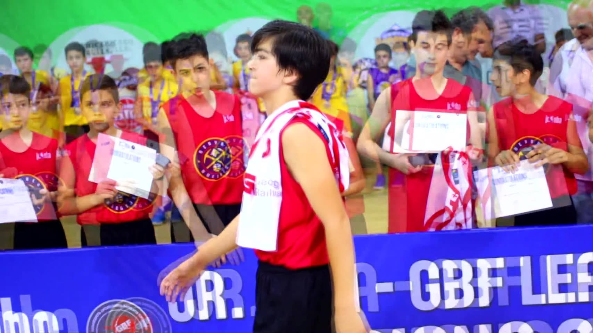

Basketball Academy Legion
ლეგიონი შეიქმნა 2016წელს, ლეგიონმა 2018-2019 წლებში მოახერხა და გახდა "junior NBA" გამარჯვებული. კალათბურთით დაინტერესებული მოსწავლეებისთვის სკოლა გთავაზობთ კალათბურთის კლუბს.
"Legion"კალათბურთის კლუბზე მიიღებიან 7-15 წლამდე ასაკის მოსწავლეები. ვარჯიში გაიმართება კვირაში სამჯერ სკოლა "ოლიმპის" განახლებულ სპორტულ დარბაზში.
სამშაბათს და ხუთშაბათს 17:00 -18:00 ; 18:00-19:00 (ასაკობრივი ჯგუფის მიხედვით)
შაბათს 12:00-13:00; 13:00-14:00 (ასაკობრივი ჯგუფის მიხედვით)
